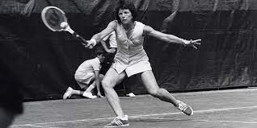

Inicio
Historia
Gran dominadora de las canchas durante casi dos décadas, Billie-Jean King acreditó su maestría en todas la modalidades (individual, dobles y dobles mixtos) y fue la primera atleta en superar los 100.000 dólares de ganancias en una temporada. Como destacada fundadora de la Women Tennis Association (WTA), organización paralela a la ATP masculina, tuvo gran ascendencia sobre sus colegas y fue una de las principales luchadoras en pro de la igualdad de honorarios en el tenis femenino, contribuyendo decisivamente a incrementar su popularidad. Tras cursar sus estudios en Los Ángeles, a los 22 años contrajo matrimonio con Larry King y adoptó el apellido de su marido (su nombre de soltera era Billie-Jean Moffitt), con el que se haría mundialmente famosa. Previamente, a los 18 años, había ya sorprendido a todo el mundo al imponerse en un partido de Wimbledon a la por entonces reina del tenis mundial, Margaret Smith. Fue el preludio de una de las más exitosas trayectorias tenísticas del prestigioso Torneo de Wimbledon, del cual conquistó seis títulos en modalidad individual (1966-1968, 1972, 1973 y 1975), diez en dobles (1961, 1962, 1965, 1967, 1968, 1970-1973 y 1979) y cuatro en dobles mixtos (1967, 1971, 1973 y 1974). En total, veinte triunfos en la pista británica, récord todavía en la actualidad difícil de superarBillie-Jean King no dejó de reivindicar en ningún momento la igualdad de trato para las mujeres en el deporte. Con su victoria sobre la antigua estrella masculina Bobby Riggs en 1973, en un partido de exhibición, intentó convencer a la opinión pública de que podían competir en destreza con los hombres. Ese mismo año colaboró en la formación de la Women Tennis Association (WTA), organismo rector del circuito profesional de tenis femenino. Tras retirarse de las pistas trabajó como entrenadora y como comentarista de televisión. Nombrada capitana del equipo estadounidense de Copa Federación en 1995, condujo a su país a tres victorias en dicha competición (1996, 1999 y 2000). En 1996 fue seleccionadora del equipo de tenis femenino de Estados Unidos que participó en los Juegos Olímpicos de Atlanta.
